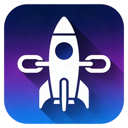

01 / API KEY
拖入 .p8，
账号就绪。
在 API Key 管理里填写 Issuer ID 与 Key ID，拖入 .p8 私钥，一键验证。可以保存多套配置并随时切换当前账号；私钥以安全作用域书签引用，文件留在原处。
- 多账号切换
- 连通性验证
- asc auth login
ConnectMate · macOS 13 及更高版本
ConnectMate 通过本机的 asc CLI 管理 API Key、App、构建版本与签名资产。三栏界面，批量操作，每条命令都留有记录。
01 / API KEY
在 API Key 管理里填写 Issuer ID 与 Key ID，拖入 .p8 私钥，一键验证。可以保存多套配置并随时切换当前账号；私钥以安全作用域书签引用，文件留在原处。
02 / APPS
刷新一次，列表写入本地缓存，按名称或 Bundle ID 即时搜索；右侧详情列出 Bundle ID、SKU、App ID 与平台。新 App 也能在这里直接创建。
03 / BUILDS
按 App 加载构建版本，处理中、有效、无效、已过期一目了然。多选后批量标记过期，进度显示在后台任务里；要发新版时，直接添加 App Store 版本。
04 / SIGNING
标识符、证书、设备、描述文件集中在一处：生成 CSR 并创建证书，用当前 Mac 的 UDID 注册设备，从列表勾选 Bundle ID、证书和设备创建描述文件，下载或删除点一下即可。
界面示意，图中 App 与数据均为虚构示例。
DETAILS
这些细节让日常的 App Store Connect 杂务少一点意外。
每条 asc 命令连同参数、输出、退出码与耗时写入本地数据库，可从「文件」菜单导出。
App、构建版本等数据缓存在本机 SQLite。有效期可选 5 分钟、30 分钟、1 小时或手动刷新，也可一键清除，配置保留。
API Key 配置、缓存的 App 与构建版本、命令日志，一并导出为 JSON 备份，保存位置自选。
简体中文、繁体中文、英文界面；跟随系统、浅色、深色三种主题，侧边栏样式与列表行高也可调。
可录制全局快捷键与刷新快捷键；为 asc 设置 HTTP 代理、命令超时与重试次数。
内置 Sparkle，更新包经 EdDSA 签名校验；可设置检查频率，也能随时手动检查。
GET STARTED
ConnectMate 依赖本机的 asc CLI 与一把 App Store Connect API Key。
按 App Store Connect CLI 项目说明安装。默认路径 /usr/local/bin/asc，可在「设置 → CLI 与 API」中修改；首次启动会自动检查。
在 App Store Connect 后台创建 API Key，记下 Issuer ID 与 Key ID，并下载 .p8 私钥文件。
打开「管理 API Key」，拖入 .p8、填好信息后点击验证，再刷新「我的 App」即可开始。

打开 DMG，把 ConnectMate 拖进「应用程序」文件夹。之后的新版本会在应用内通过 Sparkle 提示更新。
ConnectMate 没有账号系统，也不内置统计 SDK。API Key 配置、缓存与命令日志保存在本机 ~/Library/Application Support/ConnectMate，对 App Store Connect 的访问全部经由本机的 asc CLI 完成。
检查更新时，应用会向 GitHub 请求更新源与 Release 信息；Sparkle 可能随请求附带匿名系统信息（如 macOS 版本）。